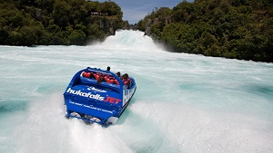
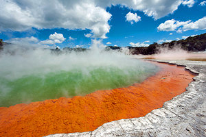
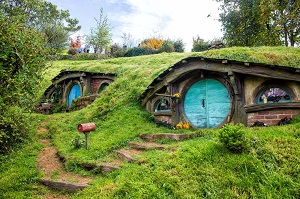

Attractions
Milford Sound/Piopiotahi is a fiord in the south west of New Zealand's South Island within Fiordland National Park, Piopiotahi (Milford Sound) Marine Reserve, and the Te Wahipounamu World Heritage site. It has been judged the world's top travel destination in an international survey (the 2008 Travelers' Choice Destinations Awards by TripAdvisor) and is acclaimed as New Zealand's most famous tourist destination. Rudyard Kipling had previously called it the eighth Wonder of the World
The Huka Falls are a set of waterfalls on the Waikato River that drains Lake Taupo in New Zealand. A few hundred metres upstream from the Huka Falls, the Waikato River narrows from approximately 100 metres across into a canyon only 15 metres across. The canyon is carved into lake floor sediments laid down before Taupo's Oruanui eruption 26,500 years ago.
The Sky Tower is an observation and telecommunications tower located at the corner of Victoria and Federal Streets in the Auckland CBD, Auckland, New Zealand. It is 328 metres (1,076 ft) tall, as measured from ground level to the top of the mast, making it the tallest freestanding structure in the Southern Hemisphere and the 23rd tallest tower in the world. It has become an iconic landmark in Auckland's skyline due to its height and unique design.
Rotorua is a city on the southern shores of Lake Rotorua from which the city takes its name, located in the Bay of Plenty Region of New Zealand's North Island. It is known for its geothermal activity, and features geysers – notably the Pohutu Geyser at Whakarewarewa – and hot mud pools. This thermal activity is sourced to the Rotorua caldera, on which the town lies.
The Waitomo Caves is a village and solutional cave system forming a major tourist attraction in the northern King Country region of the North Island of New Zealand, 12 kilometres northwest of Te Kuiti. The main caves in the area are noted for their stalactite and stalagmite displays, and for the presence of glowworms.
The Hobbiton Movie Set was a significant location used for The Lord of the Rings film trilogy and The Hobbit film series. It is situated on a family run farm about 8 kilometres (5.0 mi) west of Hinuera and 10 kilometres (6.2 mi) southwest of Matamata, in Waikato, New Zealand, and is now a Tolkien tourism destination, offering a guided tour of the set.
Cape Reinga is the northwesternmost tip of the Aupouri Peninsula, at the northern end of the North Island of New Zealand. Cape Reinga / Te Rerenga Wairua is more than 100 km north of the nearest small town of Kaitaia. Suitable vehicles can travel to it via Ninety Mile Beach and Kauaeparaoa Stream stream bed.
-->